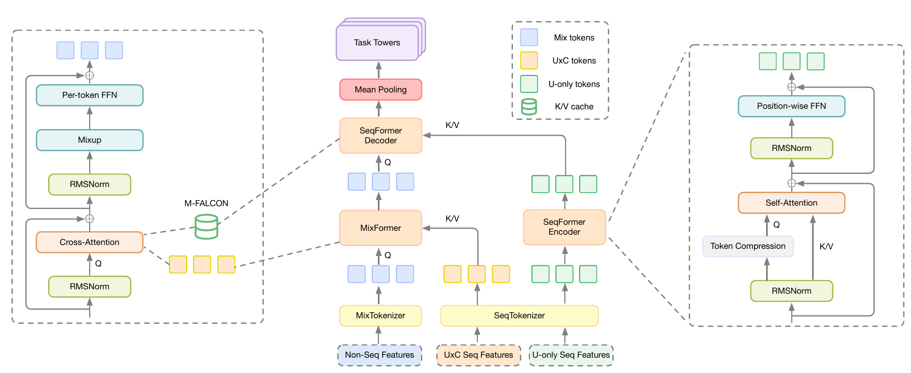
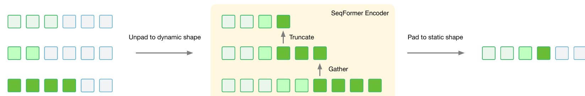
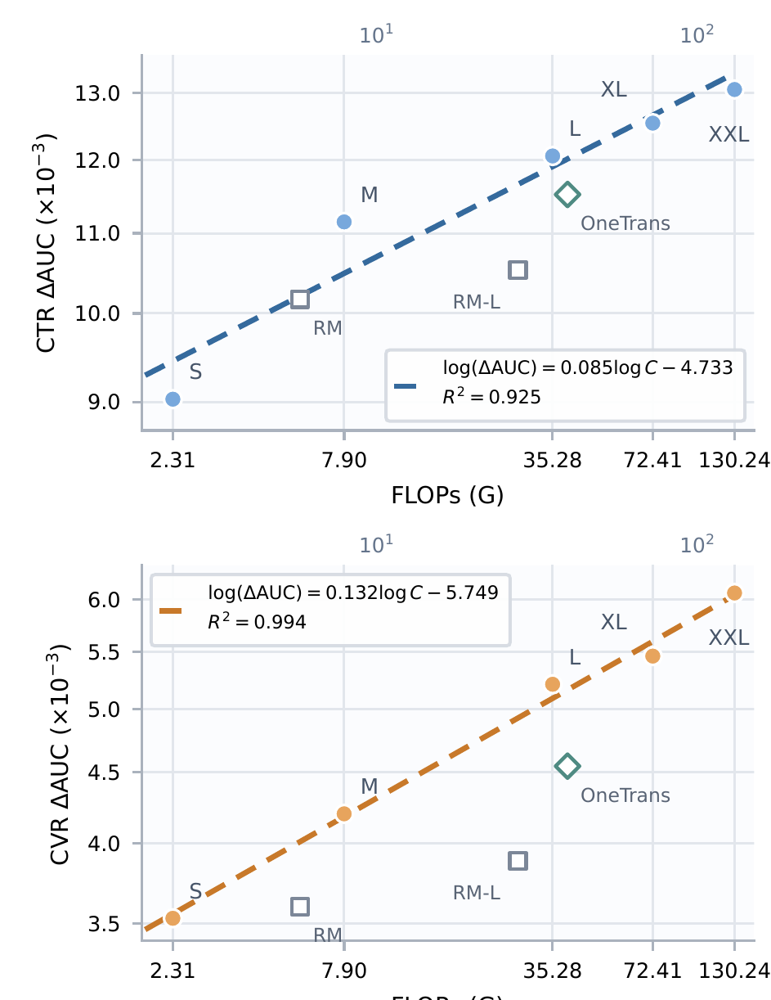

做精排的团队值得读。它回答的是一个很实际的问题：特征交互和长序列建模都想加大，但两者放在一起时怎么加，才能让新增的算力真正变成 AUC，同时不丢掉“一个请求只算一次用户历史”的服务优势。核心思想一句话：用户历史只往候选方向流，先编码成一份所有候选共用的 K/V 缓存，候选侧的特征 token 在每一层先从序列里检索证据、再做特征交互，交替堆叠。作者把这套结构叫 HELIX（字节跳动电商视频推荐团队的精排架构）。在 TikTok 电商视频精排上，HELIX-L（论文里的中等规模配置）的 CTR AUC 相对生产基线提升 0.21%，而把基线从 210M 参数放大到 1069M 只换来 0.04%；全流量 A/B 中每用户电商视频 GMV 提升 5.99%。
它到底在解决什么问题？
先看一个示意场景。一个用户打开电商视频流，精排要给 500 个候选视频打分。这个用户有两类历史：一类是和候选无关的，比如最近 2000 次观看和购买，论文叫 U-only 序列；另一类要用候选去查，比如“和当前候选同类目的历史行为”，论文叫 U×C 序列（hard-search 或 soft-search 得到的子序列）。此外还有几百个非序列特征：用户画像、视频属性、上下文、交叉特征。
现在业界扩模型有两条路。一条是把特征交互做大，比如 RankMixer 这类把异构特征切成 token、用 token 混合块堆深的结构；另一条是把序列建模做大，比如 HSTU 这类更深的注意力。作者的发现是：只扩一条路，另一条会成为瓶颈。生产基线 RankMixer + Transformer 正是“特征交互一段、序列建模一段”的两段式结构，参数放大 5 倍、FLOPs 放大约 4.8 倍，CTR AUC 只多了 0.04%。
把两者放进一个统一骨干是近年的方向，但作者指出现有统一结构各有一个硬伤，可以用下面这张表对照：
| 做法 | 代表 | 问题 |
|---|---|---|
| 两段式，先序列后交互 | RankMixer + Transformer | 两边不能在深层互相影响，放大收益很快变小 |
| 一个注意力里同时做交互和检索 | OneTrans | 特征 token 的注意力分散到彼此身上，序列检索变弱 |
| 双向信息流 | InterFormer、Kunlun | 候选特征会改写用户序列状态，用户侧计算没法在 500 个候选间共用 |
第三点在服务成本上最要命。在上面的场景里，如果用户序列的中间状态依赖候选，那 2000 条历史就要为每个候选各编码一次，算 500 遍；如果不依赖，算一遍就够。HELIX 的所有设计都围绕一个约束：用户侧状态必须与候选无关，在这个约束下再让两条能力交错加深。
先看全景：三路输入，三种块

整个前向过程可以按数据流写成一张表：
| 阶段 | 输入 | 做什么 | 输出 | 每个请求算几次 |
|---|---|---|---|---|
| MixTokenizer | 非序列特征 + 每条序列的均值 | 拼接后按固定宽度切成 M 段，每段独立做 LayerNorm 和投影 | M 个 mix token | 每个候选一次 |
| SeqTokenizer | U-only 序列、U×C 序列 | 每条序列投影到同一维度，各自加位置编码后拼接 | 两路序列 token | U-only 一次，U×C 每候选一次 |
| SeqFormer Encoder | U-only 序列 token | 自注意力，逐层减少 query 数 | 一份 K/V 缓存 | 每个请求一次 |
| MixFormer（N_M 层） | mix token + U×C 序列 | cross-attention 检索，再做特征交互 | 更新后的 mix token | 每个候选一次 |
| SeqFormer Decoder（N_D 层） | mix token + K/V 缓存 | 从缓存检索，再做特征交互 | 最终 mix token | 每个候选一次，缓存共用 |
| 任务塔 | 均值池化后的 mix token | CTR、CVR、GMV 等多任务预测 | 各任务分数 | 每个候选一次 |
这里 mix token 是论文的叫法，指把非序列特征切段后得到的、每个候选一组的特征 token。设计的关键分工是：注意力只负责从序列里取证据，特征之间的混合交给另一个算子。下面拆开讲。
拆开看：每一步为什么这样做
为什么特征交互不用自注意力？ mix token 来自完全不同的字段，一段可能是用户年龄和城市，另一段是视频时长和价格，分布差异很大。作者用的算子叫 Mixup-PerToken-FFN（MPTF，TokenMixer 交互块的简化版）。它分两步。第一步 Mixup 不带参数：把每个 token 的通道切成 M 片，第 t 个输出 token 由所有输入 token 的第 t 片拼成。第二步给每个 token 配一个独立参数的 SwiGLU 前馈网络：输入分别乘两个矩阵，得到 gate 和 up 两支；gate 支过一个 SiLU 激活后和 up 支逐元素相乘，再乘一个矩阵投影回原维度。
举个能手算的例子（示意）：M=3，每个 token 6 维，切成 3 片、每片 2 维。输入 A=[a1a2|a3a4|a5a6]，B、C 同理。Mixup 后第 1 个 token 是 [a1a2|b1b2|c1c2]，第 2 个是 [a3a4|b3b4|c3c4]。这样每个输出 token 都含有全部输入 token 的一部分信息，跨 token 通信完成了，却没有算 M×M 的注意力矩阵。之后逐 token 的 FFN 各管各的参数，保留了字段组之间的差异。消融里，把 Decoder 中的自注意力交互换成 MPTF，在参数和算力对齐时 CTR AUC 多 0.05%、CVR AUC 多 0.02%，是论文消融表里最大的单项。
为什么 cross-attention 只看序列、不看 mix token 自己？ OneTrans 的做法是 mix token 对 [mix token, 序列 K/V] 一起做注意力。作者的解释是 mix token 会把相当多的注意力分给自己，挤掉了对序列的检索。HELIX 把 mix token 从 key/value 里拿掉，逼注意力只看行为序列，CTR、CVR AUC 各多 0.02%。这一步也让两个算子的职责彻底分开：一层里先检索、再交互，然后下一层用更新过的 mix token 当 query 再检索一次。层数越深，query 越“高阶”，从同一份缓存里能取出的模式也越多，论文把这叫 lazy K/V：缓存只投影一次，每层只重新算 query。
为什么只缓存 Encoder 最后一层？ 另一种做法是 Encoder 每层都留一份 K/V，让 Decoder 第 r 层读 Encoder 第 r 层。这样两边的层数被绑死，序列侧想加深，候选侧也得跟着加。只留最后一层，效果持平（CTR AUC 多 0.01%，CVR 不变），缓存内存更少。更重要的收益是两条能力可以不对称地放大：把算力堆在只算一次的 Encoder 上，而不是每个候选都要算的部分上。
Encoder 怎么控制长序列的成本？ 用户历史里有好几条序列，长度和价值都不同。如果第一层把所有有效行为都当 query，query 的数量就等于历史长度，而每个 query 又要对全部行为做注意力，历史越长，这一层的成本涨得越快。HELIX 的第一次压缩叫 Gather：先给每条序列定一个名额 k_s，再取每条序列最近的 k_s 个行为当 query，拼成一条流。名额由作者离线做的特征重要性分析决定，越重要的序列名额越多；具体怎么分析、每条序列分到多少，论文没有公开。选中的 query 仍然对全部有效行为做注意力，所以没被选中的行为信息并没有丢，只是被吸收进了 query 里。之后每一层用 Truncate 只保留这条流的前一段，层越深留得越少。论文说深层的计算因此集中在最近的行为上，但没有写清打包时的排列顺序；能做到这一点，前提是流里越靠前的位置放的是越新的行为。被截掉的行为在截掉之前那一层仍作为 key/value 被读过一次，信息已经并进保留下来的 query。各层具体保留多少个，论文没有公开。作者试过均匀池化、分段池化，效果都更差，原因是推荐历史里越近的行为越能反映当前兴趣。

复用到底能省多少
这是 HELIX 和双向结构拉开差距的地方。设 MixFormer、Encoder、Decoder 每处理一个候选的成本分别是 C_M、C_E、C_D，一个请求有 n 个候选。各算各的总成本是 n(C_M+C_E+C_D)；复用缓存后是 C_E + n(C_M+C_D)。把 Encoder 占比记为 p，加速比就是 Amdahl 形式：
先手算一个示意例子：C_E=6、C_M=2、C_D=2，n=100。不复用要 100×10=1000；复用要 6+100×4=406，加速约 2.5 倍，此时 p=0.6。如果按“不对称放大”的思路把算力挪到 Encoder，使 p 变成 0.95，同样 n=100，加速比就是论文给出的约 16.8 倍。这说明复用的价值不只是省钱，它决定了算力该往哪边加：放在 Encoder 上的每一份参数，在服务时被 100 个候选平摊。 Hoot 说

两条线都是论文的 Amdahl 式 Speedup(n)=1/((1−p)+p/n)：实线 p=0.95（论文的例子），虚线 p=0.6（正文的示意例子 C_E=6、C_M=2、C_D=2）。天花板 1/(1−p) 是按同一个式子令 n→∞ 推出来的。 出处: 论文 §4 式 (20)–(23)，“p=0.95、n=100 时理论加速约 16.8×”
服务侧靠 M-FALCON（论文引用的一种注意力内核，让一个微批里所有候选的 query 直接读同一份缓存，不把缓存复制成候选数那么多份写进显存）。训练侧靠按用户组织样本，同一用户的 J 条样本只跑一次 Encoder。两者都依赖上一节那个约束：缓存与候选无关。
工程上还有两处细节值得记下。一是变长执行：每个用户的有效历史长度不同，Encoder 入口处一次性去掉 padding，全程处理打包后的变长张量。因为形状随数据变化会让 XLA 反复编译，作者关掉了这条路径的 XLA，自己写了融合的变长 kernel，注意力用 FlashAttention-4 的变长接口。二是训练稳定性：逐 token 参数加上 SwiGLU 的逐元素相乘，会让 gate 和 up 两支的激活尺度差异被乘法放大，出现离群值。作者的做法借鉴 QK-Norm：gate 和 up 两支的输出先各自归一化，再相乘。他们一开始给归一化留了可学习增益，发现增益会把刚压下去的激活重新放大，于是参照 OLMo 把增益去掉（论文没写用的是哪种归一化）。这样处理后，激活范围回到 FP16 能表示的区间，作者早先用来硬截断极端激活值的 SoftCap（超过阈值的值直接截到阈值）也不再需要，CTR AUC 还多了 0.02%。
这套方案真的更好吗？
离线实验在 TikTok 电商视频推荐的内部数据上做，所有方法用同样的数据、特征、任务和优化设置。指标是相对 RankMixer + Transformer 基线的 AUC 和 UAUC 相对提升；作者说明，在这个场景里 AUC 相对提升 0.03% 就有实际意义，能带来明显的线上收益。
| 模型 | CTR ΔAUC | CTR ΔUAUC | CVR ΔAUC | CVR ΔUAUC | 参数 | 每样本训练 FLOPs |
|---|---|---|---|---|---|---|
| RankMixer + Transformer（基线） | – | – | – | – | 210M | 5.75G |
| RankMixer + Transformer（Large） | +0.04% | +0.15% | +0.03% | +0.19% | 1069M | 27.50G |
| OneTrans | +0.15% | +0.61% | +0.10% | +0.66% | 361M | 39.27G |
| HELIX-L | +0.21% | +0.82% | +0.17% | +1.38% | 358M | 35.28G |
HELIX-L 和 OneTrans 参数几乎相同，FLOPs 还少 10%。HELIX-L 的 CTR AUC 相对提升是 0.21%，OneTrans 是 0.15%；CVR UAUC 的差距更大，是 1.38% 对 0.66%。按 0.03% 的门槛，HELIX-L 的 CTR 收益是门槛的 7 倍。这说明同样的算力，结构决定了多少能变成排序质量；而两段式基线放大到 1069M 仍不到门槛的两倍，正好印证“只扩一边不够”。
扩展性上，作者把宽度、深度和保留的序列 token 数一起放大，共五档，从最小的 S 到最大的 XXL（参数从 46M 到 1050M）：
| 档位 | CTR ΔAUC（相对 S） | CVR ΔAUC（相对 S） | 参数 | FLOPs |
|---|---|---|---|---|
| HELIX-S | – | – | 46M | 2.31G |
| HELIX-M | +0.24% | +0.07% | 99M | 7.90G |
| HELIX-L | +0.34% | +0.18% | 358M | 35.28G |
| HELIX-XL | +0.39% | +0.20% | 740M | 72.41G |
| HELIX-XXL | +0.45% | +0.27% | 1050M | 130.24G |

先说清图的口径：图里纵轴的 ΔAUC 和上表不同，S 在图中约为 9×10⁻³ 而不是 0，所以它是相对另一个参照算的，论文没有说明是哪个。这不影响看斜率。CTR 的拟合是 log(ΔAUC)=0.085·log C−4.733（R²=0.925），C 是每样本 FLOPs；CVR 斜率是 0.132（R²=0.994）。斜率的含义可以手算：算力翻倍，图中的 AUC 增益乘以 2 的 0.085 次方，大约多 6%（我的换算）；CVR 斜率更陡，翻倍约多 10%。这说明在测到的范围内，加算力的回报还是可预测的，CVR 这类稀疏目标从加大模型里拿到的更多。RankMixer 在低算力时还有竞争力，算力上去就掉到线下，OneTrans 也在 HELIX-L 下方。
线上用 HELIX-L 做随机、全流量 A/B，对照是生产中的 RankMixer + Transformer：
| 线上指标 | 相对提升 |
|---|---|
| 每用户电商视频点击 | +2.06% |
| 每用户电商视频 GMV | +5.99% |
| 每用户支付订单 | +6.10% |
| GPM（每千次曝光成交额） | +5.46% |
| 新付费用户率 | +5.87% |
| 30 天复购率 | +0.67% |
GMV 和订单的涨幅约是点击的 3 倍。我的理解是，收益主要来自把更可能成交的视频排到前面，而不只是换来更多点击。复购率只涨 0.67%，说明长期留存层面的收益小得多。
我认为它的局限
第一，消融的单项收益都贴着显著性门槛。论文消融表里多数改动是 +0.01% 到 +0.03%，GQA 和 LayerScale（给 Encoder 每个残差分支乘一个可学习的缩放系数）在 CVR 上是 0.00%；论文没有给多次运行的方差，这些小数位里有多少是噪声说不清。可信的是总体结论（HELIX-L 比基线多 0.21%），不宜把每个小部件单独当成确定收益。
第二，算力账没有算完整。HELIX-L 每样本训练 FLOPs 是 35.28G，是基线 5.75G 的约 6 倍，而且这是“摊销前”的数字。论文给了理论加速比，却没报线上 P99 延迟、显存和机器成本，也没说部署时 p 实际是多少。没有这些，外部团队很难判断 6% 的 GMV 要付出多少服务成本。
第三，证据来自单一内部场景。只报相对提升、不给绝对 AUC，没有公开数据集上的复现，训练步数、batch、硬件也没披露。电商视频请求里候选多、用户历史长，正好是复用最划算的情形；候选少或历史短的场景，复用的收益会小很多。
一个推荐/搜索团队可以怎么试
- 先查现有精排里的用户侧计算能不能与候选无关。如果序列模块用了 target attention 让候选参与编码，先把它拆成“候选无关的 Encoder + 候选查询的 Decoder”，只做这一步就能看出复用能省多少，判断标准是同样效果下每请求的 GPU 时间。
- 在两段式模型的交互部分把自注意力换成 MPTF。这一步改动最小，消融里也是最大的单项，用 AUC 相对提升是否超过自己业务的显著性门槛来判断。
- 再上交错结构：先堆几层 MixFormer（每层先读 U×C 序列、再做交互），再接几层 Decoder（每层先读缓存、再做交互），并只保留 Encoder 最后一层的缓存。每次只加一个部件，按“拆开看”一节的顺序：先换 MPTF，再让 cross-attention 只看序列，最后只留最后一层缓存。每加一个都和上一版做配对对比，同时记录 P99 延迟和显存。
- 有余量时做不对称扩展：只加深 Encoder、保持候选侧不变，画出自己的“FLOPs 对 AUC 增益”曲线，看斜率是否接近论文的 0.085 和 0.132，以此决定下一档算力该花在哪边。
一句话结论
精排模型想继续放大，关键不是选特征交互还是序列建模，而是让两者交错加深，同时守住“用户侧只算一次”这条线，这样新增的算力才能被候选平摊。
| 维度 | 评价 |
|---|---|
| 问题重要性 | 高。精排放大普遍遇到收益变小，又受服务成本约束 |
| 方法创新性 | 中高。部件多来自已有工作，新意在单向信息流和职责分工的组合 |
| 实验证据 | 中高。有五档扩展曲线和全流量 A/B，但只有相对指标，消融无方差 |
| 工程成本 | 高。需要变长 kernel、请求级缓存和按用户组织的训练，摊销前 FLOPs 约为基线 6 倍 |
| 是否值得尝试 | 值得。可以从“用户侧与候选无关”和换 MPTF 这两步低成本开始 |
| 适用场景 | 候选多、用户历史长的精排，例如电商和内容推荐 |
读完这篇，你觉得
夜读鸮记下了，谢谢你的反馈。
点一下即可，无需登录；再点一次撤回。只统计匿名次数，不记录你是谁。
讨论
欢迎补充实验细节、复现经验或不同看法。需 GitHub 登录。
正在加载讨论…